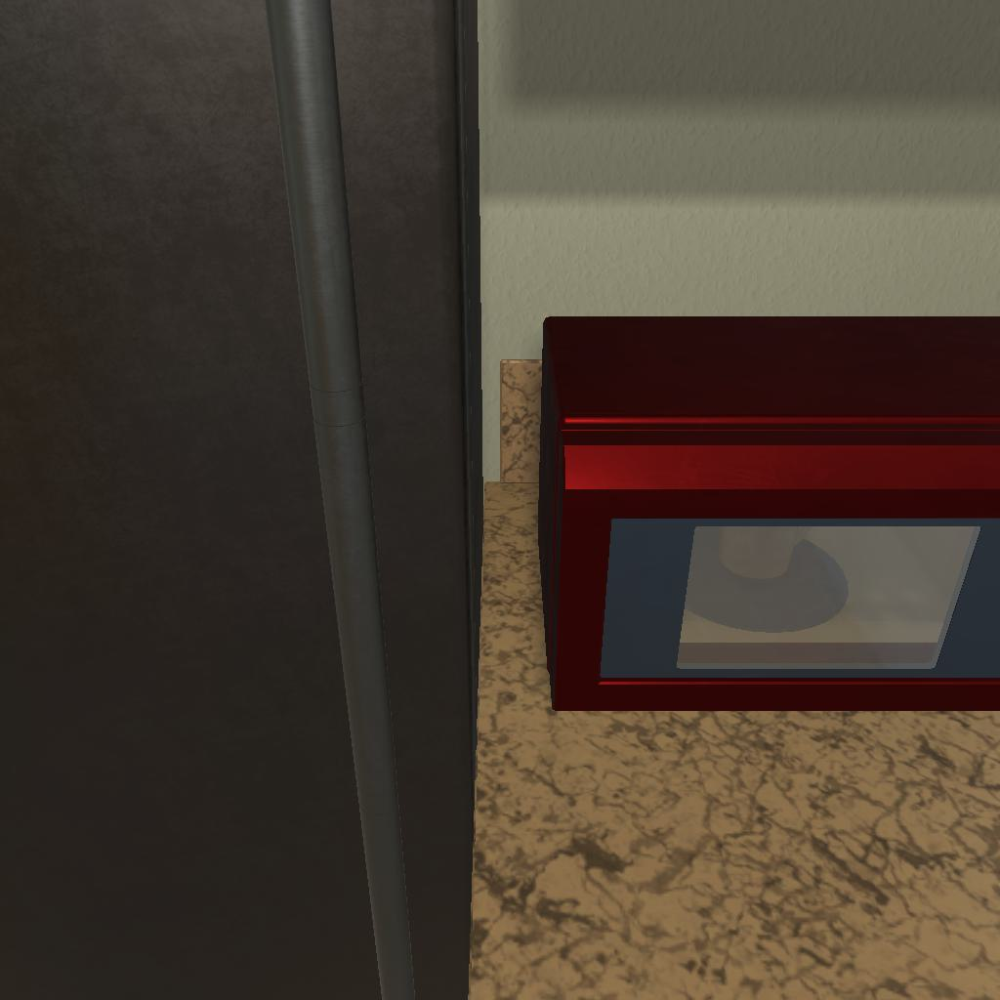

---------------------------------------------------------task: 18---------------------------------------------------------
--------------------------------------------------------------------------------------------------------------------------------------------------------------------
--------------------------------------------------------------------------------------------------------------------------------------------------------------------
Step:--------------------------------------------------------------------------7-------------------------------------------------------------------------------
----------------------------------------
VLM Prompt:
Image1:
Image2:
**Instruction**
1. Analyze the provided images to identify all visible household objects and compare the difference between images (e.h. whether the object is opened or not and taken on hand or not), focusing on those relevant to the task description "put a cool pot in cabinet."
2. Use the analysis of images and the task hint "The agent must find an object of the desired type, pick it up, go to a fridge, cool the object with the fridge, then find the correct location to place it, and put it down there. The agent does not need to use the fridge button or open the fridge to cool the object, and the agent just needs to do action that is "cool the object with the fridge"." to answer the question: what is the most reasonable action in the choices for the task description "put a cool pot in cabinet"?
3. Decide and write the answer using the template: The answer is: (i): , where i is the real number. If there is no desired object in images, search every place based on **Initial Observation** to find the object. And if no one is exactly correct, choose a similar answer.
**Initial Observation**
You are in the middle of a room. Looking quickly around you, you can see cabinet (1-20), countertop (1-3), coffeemachine (1), toaster (1), sink (1), fridge (1), microwave (1), garbagecan (1), drawer (1-3), sinkbasin (1), stoveburner (1-4), shelf (1-3)
**Answer Choices**
(1): go to cabinet 1
(2): go to cabinet 2
(3): go to cabinet 3
(4): go to cabinet 4
(5): go to cabinet 5
(6): go to cabinet 6
(7): go to countertop 1
(8): go to coffeemachine 1
(9): go to cabinet 7
(10): go to toaster 1
(11): go to cabinet 8
(12): go to sink 1
(13): go to microwave 1
(14): go to garbagecan 1
(15): go to cabinet 9
(16): go to cabinet 10
(17): go to countertop 2
(18): go to cabinet 11
(19): go to cabinet 12
(20): go to drawer 1
(21): go to countertop 3
(22): go to drawer 2
(23): go to cabinet 13
(24): go to sinkbasin 1
(25): go to cabinet 14
(26): go to drawer 3
(27): go to stoveburner 1
(28): go to stoveburner 2
(29): go to stoveburner 3
(30): go to cabinet 15
(31): go to stoveburner 4
(32): go to cabinet 16
(33): go to cabinet 17
(34): go to cabinet 18
(35): go to cabinet 19
(36): go to cabinet 20
(37): go to shelf 1
(38): go to shelf 2
(39): go to shelf 3
(40): open fridge 1
(41): close fridge 1
(42): examine fridge 1
**Answer**
Let's think step by step by following the instructions.
----------------------------------------
----------------------------------------
Original Response:
The task is to put a cool pot in a cabinet. To accomplish this, the agent must find a pot, cool it with the fridge, and then place it in the correct cabinet.
Image Analysis:
- Image1 shows a set of closed white cabinets with golden handles. No objects are visible or in hand in this image.
- Image2 shows a countertop with a red object that resembles a toaster, and part of a fridge is visible. No pots or other relevant objects are visible or in hand in this image.
Comparing the two images, we do not see any pots that the agent could cool and put in the cabinet. Therefore, the agent must search for a pot based on the initial observation.
Initial Observation:
The initial observation lists several cabinets, a countertop, various kitchen appliances, and a fridge. Since the task is to put a cool pot in a cabinet, the agent should first locate a pot. Pots are not explicitly listed in the initial observation, but they are typically found in cabinets or sometimes on stove burners.
Since the agent does not need to use the fridge button or open the fridge to cool the object, the action of cooling with the fridge is assumed to be an automatic process once the pot is in the agent's possession. Therefore, the focus is on locating a pot.
Based on the task and initial observation, the most reasonable action for the agent would be to search the cabinets and stove burners for a pot. None of the answer choices directly involve finding a pot, but they do involve going to various cabinets and stove burners where a pot might be found.
The answer is: Since we do not have a specific location where the pot is, the agent should search every place starting from cabinet 1 to cabinet 20, stove burner 1 to stove burner 4, and any other place where a pot might be located according to the initial observation. If a pot is found, the next step would be to cool it with the fridge and then proceed to put it in the correct cabinet.
----------------------------------------
----------------------------------------
>>> Refine Original VLM Response and Get Pure Action: No action
----------------------------------------
-----------------------------------------------------------------
Running time: 13.283511877059937 seconds
Total Money: 8.799290000000003
-----------------------------------------------------------------
-----------------------------------------------------------------
Text Observation:Nothing happens.
-----------------------------------------------------------------
UNSUCCEED